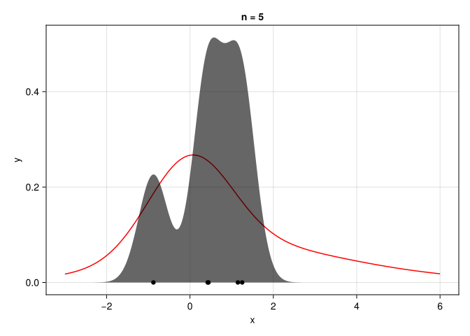
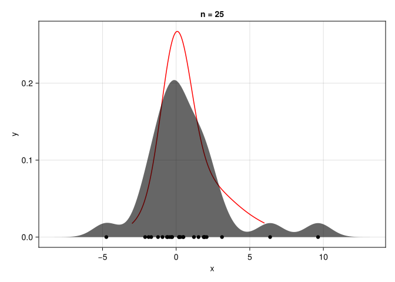
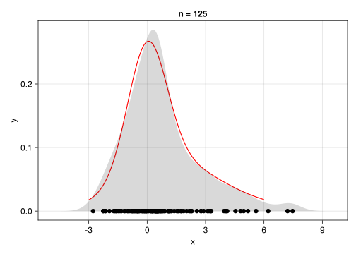
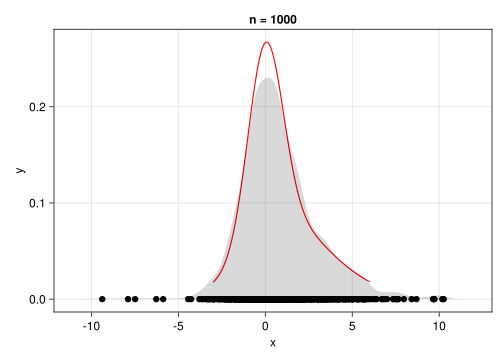
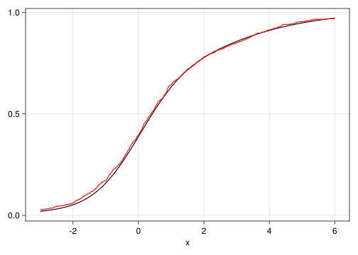
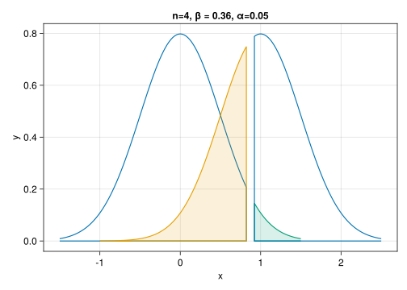
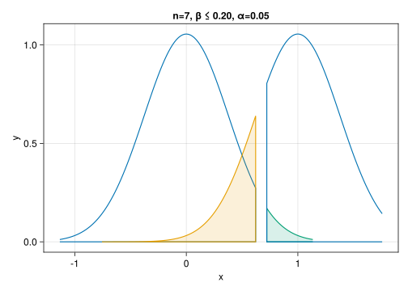
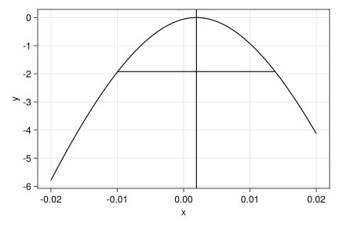

using StatsBase, Distributions
using DataFrames
using AlgebraOfGraphics, CairoMakie8 Inference
A goal of statistics is to use data to characterize the process that generated the data.
To discuss, we first load some useful packages:
8.1 Larger data sets
Suppose \(x_1, x_2, \dots, x_n\) is sample. If we assume these are realizations from some iid random sample \(X_1, X_2, \dots, X_n\) from some population then when \(n\) is large we expect the shape of the population to be well described.
The density plots in Figure 8.1 show a population, a random sample of a certain size from that population, and an density plot found from the random sample. As the sample size gets larger, the density plot resembles more the underlying population.




To quantify this, we use the empirical cdf defined as
\[ F_n(a) = \frac{\#\{i: x_i \leq a\}}{n}. \]
That is, the proportion of the sample data less than or equal to \(a\). This estimates the cdf of the population. The ecdf function from StatsBase returns a function. For example, we have for this population given as a mixture of normal distributions:
Y = MixtureModel(Normal[
Normal(0, 1),
Normal(1, 2),
Normal(2.0, 3)], [0.5, 0.2, 0.3])
xs = rand(Y, 1000)
Fₙ = ecdf(xs)
findmax(abs(cdf(Y,x) - Fₙ(x)) for x in range(-5, 5, 1000))(0.02180623231041745, 495)The maximum distance between cumulative distributions functions is a useful statistic in itself, which we don’t pursue. Rather, we show in Figure 8.2 the empirical cdf and the theoretical cdf for this simulation.
Fₙ = ecdf(rand(Y, 1000))
xs = range(-3, 6, 1000)
d = data((x=xs, y=cdf.(Y,xs), y′=Fₙ.(xs)))
p = d * visual(Lines; color=:black) * mapping(:x, :y)
p = p + d * visual(Lines; color=:red) * mapping(:x, :y′)
draw(p)
8.2 Confidence intervals
When there is a much smaller sample size, one can still infer things about the underlying population if additional assumptions on the population are made. In general, the stronger the assumptions, the more that can be said.
8.2.1 Confidence interval for a population mean
For example, suppose you have a data set with \(n\) elements, \(x_1, x_2, \dots, x_n\), and you assume that:
the data can be modeled as realizations of some iid collection of random variables, \(X_1, X_2, \dots, X_n\) and
the population of the random variables is \(Normal(\mu, \sigma)\).
With these assumptions the basic facts of probability allow statements about \(\mu\) based on the data set.
We know the statistic:
\[ Z = \frac{\bar{X} - \mu}{\sigma/\sqrt{n}} = \frac{\bar{X} - \mu}{SD(\bar{X})} \]
has a \(Normal(0,1)\) distribution. For any \(\alpha\) with \(0 < \alpha < 1/2\), we can solve for values \(z_{\alpha/2}\) and \(z_{1-\alpha/2}\) satisfying:
\[ P(z_{\alpha/2} < Z < z_{1 - \alpha/2}) = 1 - \alpha. \]
(That is between the \(z\) values lies \((1-\alpha)\cdot 100\)% of the area under the pdf for \(Normal(0,1)\).)
By the symmetry of the normal distribution, we have \(z_{\alpha/2} = - z_{1-\alpha/2}\).
Rearranging this, we have with probability \(1 - \alpha\) the following inequality occurs:
\[ \bar{X} - z_{1-\alpha/2}\cdot SD(\bar{X}) < \mu < \bar{X} + z_{1-\alpha/2}\cdot SD(\bar{X}) \]
Now, the data set is just one possible realization of these random variables, which may or may not be unusual, we can’t say. However, we can say the process that produced this data set will produce values where \((1-\alpha)\cdot 100\)% of the time
\[ \bar{x} - z_{1-\alpha/2}\cdot SD(\bar{x}) < \mu < \bar{x} + z_{1-\alpha/2}\cdot SD(\bar{x}). \]
Since a data set is a single realization, and probability speaks to the frequency of many realizations, we can’t say for our lone data set that there is a \((1-\alpha)\cdot 100\)% chance this occurs, rather the language adopted is to say the interval \((\bar{x} - z_{1-\alpha/2}\cdot \sigma/\sqrt{n}, \bar{x} + z_{1-\alpha/2}\cdot \sigma/\sqrt{n})\) is a \((1-\alpha)\cdot 100\)% confidence interval for an unknown parameter \(\mu\).
For a data set drawn from iid random sample with a \(Normal(\mu,\sigma)\) population a \((1-\alpha)\cdot 100\)% confidence interval is given by \(\bar{x} \pm z_{1-\alpha/2}\cdot \sigma/\sqrt{n}\), where \(z_{1-\alpha/2}=-z_{\alpha/2}\) satisfies \(P(z_{\alpha/2} < Z < z_{1-\alpha/2})\), \(Z\) being a standard normal random variable.
Figure 8.3 illustrates confidence intervals based on several independent random samples. Occasionally – with a probability controlled by \(\alpha\) – the intervals do not cover the true population mean.

Example 8.1 (Confidence interval for the mean) Consider the task of the beverage dispenser service person. While they may enjoy great benefits and the opportunity to work out of an office, do they get a chance to practice statistics? Well, possibly. Consider the task of calibrating an automatic coffee dispenser. Suppose the engineers have managed to control the variance of the pour so that \(\sigma = 0.5\) oz. The \(8\) oz. cups should not overflow, but should look full when done. As such, the technician aims for a mean dispense of around \(7\) oz, but not including \(7.5\). To gauge this, they run the machine \(6\) times and collect data using a calibrated glass. Assume this data set is from a \(N(\mu,\sigma=1/2)\) population:
7.9 7.2 7.1 7.0 7.0 7.1A \(95\)% confidence interval for \(\mu\) is given by:
xs = [7.9, 7.2, 7.1, 7.0, 7.0, 7.1]
n = length(xs)
σ = 1/2
α = 0.05
za = quantile(Normal(0, 1), 1 - α + (α/2))
SE = σ / sqrt(n)
(mean(xs) - za*SE, mean(xs) + za*SE)(6.816590693637058, 7.616742639696278)That \(7.5\) is included may be problematic, as larger pours than \(8\) oz are possible with these assumptions, so the technician calibrates the machine a bit less aggressively.
The assumption of a normal population is used to say the distribution of \(\bar{X}\) is normal. This would be true if the population weren’t normal but the sample size, \(n\), were sufficiently large. The important part is having assumptions that allows the sampling distribution of a useful statistic to be known.
The above assumes an unknown mean (\(\mu\)) but a known standard deviation. If that assumption isn’t realistic, something similar can be said. Consider the \(T\)-statistic:
\[ T = \frac{\bar{X} - \mu}{SE(\bar{X})}, \]
Under the assumptions above (iid sample, normal population), the standard error is \(S/\sqrt{n}\) and the distribution of \(T\) is the \(T\)-distribution with \(n-1\) degrees of freedom.
For a data set of size \(n\) drawn from an iid random sample with a \(Normal(\mu,\sigma)\) population a \((1-\alpha)\cdot 100\)% confidence interval is given by \(\bar{x} \pm t_{1-\alpha/2}\cdot s/\sqrt{n}\), where \(t_{\alpha/2} = -t_{1-\alpha/2}\) satisfies \(1-\alpha = P(t_{\alpha/2} < T_{n-1} < t_{1-\alpha/2})\), \(T_{n-1}\) being \(T\) distributed with \(n-1\) degrees of freedom.
Example 8.2 (Confidence interval for the mean, no assumption on \(\sigma\)) Returning to the coffee-dispenser technician, a cappuccino dispenser has two sources of variance for the amount poured – the coffee and the foam. This is harder to engineer precisely, so is assumed unknown in the calibration process. Suppose the technician again took \(6\) samples to gauge the value of \(\mu\).
With no assumptions on the value of \(\mu\) or \(\sigma\). A \(95\)% confidence interval for \(\mu\) would be computed by:
xs = [7.9, 7.2, 7.1, 7.0, 7.0, 7.1]
n = length(xs)
s = std(xs)
α = 0.05
za = quantile(TDist(n-1), 1 - α + (α/2))
SE = s / sqrt(n)
(mean(xs) - za*SE, mean(xs) + za*SE)(6.856683216914592, 7.576650116418743)These computations – and many others – are carried out by functions in the HypothesisTests package. For example, we could have computed the values above through:
using HypothesisTests
confint(OneSampleTTest(xs))(6.856683216914592, 7.576650116418743)Of some note, while often the extra assumption of a known standard deviation will lead to smaller confidence intervals, that is not guaranteed, as seen in this data set.
Example 8.3 (Dependent samples) A method to reduce variability between samples is to match treatments. A classic data set is shoes, which collected shoe wear data from 10 boys, each given two different shoes to wear.
using RDatasets
shoes = dataset("MASS", "shoes")
first(shoes, 2)2×2 DataFrame
| Row | A | B |
|---|---|---|
| Float64 | Float64 | |
| 1 | 13.2 | 14.0 |
| 2 | 8.2 | 8.8 |
Some boys are assumed to be harder on shoes than others, so by matching the two types, it is expected that the difference in the shoe wear per boy could be attributed to the material. That is, if \(X_1, \dots, X_{n}\) models the one material and \(Y_1, \dots, Y_n\) the other, the difference \(Z_i = X_i - Y_i\) should model the difference between the materials. Assuming this data is an iid random sample from a \(Normal(\mu, \sigma)\) population, we can find a \(90\)% confidence interval for the mean difference:
ds = combine(shoes, [:A,:B] => ByRow(-) => :Z)
confint(OneSampleTTest(ds.Z); level=0.90)(-0.634426399199845, -0.18557360080015525)That this does not contain \(0\), suggests a difference in the mean wear between shoes.
The above illustrates a pattern: a sampling statistic (a pivotal quantity) which includes an unknown population parameter with a known sampling distribution independent of the parameters allows the formulation of confidence interval.
8.2.2 Confidence interval for a difference of means
For two iid random samples, \(X_1, X_2, \dots, X_{n_1}\) and \(Y_1, Y_2, \dots, Y_{n_2}\) from two normal populations \(Normal(\mu_1, \sigma_1)\) and \(Normal(\mu_2, \sigma_2)\) we may have sample data. From that data, the question of the difference between \(\mu_1\) and \(\mu_2\) can be considered.
With the assumption that the two samples are themselves independent, the standard deviation for \(\bar{X} - \bar{Y}\) can be computed as:
\[ SD(\bar{X} - \bar{Y}) = \sigma_{\bar{X} - \bar{Y}} = \sqrt{\frac{\sigma_1^2}{n_1} + \frac{\sigma_2^2}{n_2}}. \]
Let the \(T\) statistic be
\[ T = \frac{(\bar{X} - \bar{Y}) - (\mu_1 - \mu_2)}{SE(\bar{X} - \bar{Y})} = \frac{\text{observed}-\text{expected}}{SE}. \]
The distribution of \(T\) and the formula for \(SE\) depends on assumptions made:
- If both \(\sigma_1\) and \(\sigma_2\) are assumed known, \(SE(\bar{X} - \bar{Y}) = SD(\bar{X} - \bar{Y})\), and \(T\) has a normal distribution.
- If it is assumed \(\sigma = \sigma_1 = \sigma_2\), but if no value is assumed, then the data can be pooled to estimate \(\sigma\), the common standard deviation, to get \(SE(\bar{X} - \bar{Y}) = s_p\sqrt{1/n_1 + 1/n_2}\) and \(T\) has a \(T\) distribution with \(n_1 + n_2 - 2\) degrees of freedom. The pooled standard deviation is the square root of \((s_1^2(n_1-1) + s_2^2(n_2-1))/(n_1+n_2-2)\).
- If it is not assumed \(\sigma = \sigma_1 = \sigma_2\) (though it secretly could be), then the standard error is \(\sqrt{s_1^2/n_1 + s_2^2/n_2}\). The distribution of \(T\) is approximately \(T\)-distributed with an effective degrees of freedom given by the Welch-Satterhwaite equation, which is always between than the smaller of \(n_1-1\) and \(n_2-1\) and \(n_1 + n_2 - 2\).
Example 8.4 (Confidence interval for the difference of means) Suppose the coffee-dispenser technician is tasked with calibrating two machines. Again they take samples from the two machines, in this case:
Machine 1: 7.0, 7.8, 7.7, 7.6, 8.3
Machine 2: 6.2, 8.0, 6.8, 7.0, 7.3, 7.9, 7.1Do the machines output the same amount on average? To answer this, we consider a confidence interval for \(\mu_1 - \mu_2\).
If the two machines are assumed to have the same variance, we can compute a 90% confidence interval with:
xs = [7.0, 7.8, 7.7, 7.6, 8.3]
ys = [6.2, 8.0, 6.8, 7.0, 7.3, 7.9, 7.1]
confint(EqualVarianceTTest(xs, ys); level=0.90)(-0.10761090026945175, 1.0961823288408845)That \(0\) is in this interval gives evidence that the two means are equal. The sample means do differ:
mean(xs), mean(ys)(7.6800000000000015, 7.185714285714285)But the variability is such, the confidence interval makes it conceivable that the population means are the same. Perhaps were more data available, a difference would be seen, as the variablity is generally smaller for larger sample sizes.
If the machines are from different vendors, or dispense different beverages, perhaps the assumption of equal variances is not appropriate. The UnequalVarianceTTest method is available for this comparison. The calling pattern is identical:
confint(UnequalVarianceTTest(xs, ys); level=0.90)(-0.07723849812971084, 1.0658099267011436)The default for such tests in other languages, such as R, is to not assume equal variances.
| Method | Description |
|---|---|
| OneSampleZTest | Inference on population mean for one sample, known population standard deviation |
| OneSampleTTest | Inference on population mean for one sample, unknown population standard deviation |
| EqualVarianceTTest | Inference on difference of population means for independent samples assuming equal population standard deviations |
| UnequalVarianceTTest | Inference on difference of population means for independent samples not assuming equal population standard deviations |
8.2.3 Confidence interval for a proportion
A very common use of confidence intervals is found in the reporting of polls, particularly political polls, where it may be typical to see a statement such as “Candidate A is ahead of her opponent in the polls by 5 percentatge points with a margin of error of 5 percent” or “The favorability rating of President B is 54% with a 5 percent margin of error.” These are descriptions of confidence intervals, though both leave the confidence level unspecified. When unspecified, it can usually be roughly inferred from the margin of error, as will be seen.
A model for a poll where a person chose one of two options is to use a Bernoulli random variable, \(X_i\), to describe the response. The number of \(1\)s in a fixed number of \(n\) respondents can give a proportion. If one can assume the \(X_i\) are iid random samples from a \(Bernoulli(p)\) population, then the number of \(1\)s can be viewed as a realization of a \(Binomial(n,p)\) distribution. That is, this statistic will have a known distribution.
Before pursuing, let’s note that the assumption implies a few things about the sampling process carried out by the pollster:
The population \(p\) is the proportion of the entire voting population (supposedly of size \(N\)) that would respond with a code of \(1\). A census could find \(p\), but random sampling is used as censuses are typically much more work to carry out.
The independent assumption technically requires sampling with replacement, where a person could be asked \(0\), \(1\), or more times the question. But practically if \(N\) is much greater than \(n\) this isn’t necessary and sampling without replacement can be used.
The identically distributed assumption requires the sampling to be representative. For example, if it is a state-wide population, a sample concentrated on one, possibly partisan, district would not be expected to be identically distributed from the population. Such sampling would likely introduce a bias.
Assuming, a survey is reasonably described by a \(Binomial(n,p)\) distribution, the BinomialTest can be used to identify a confidence interval for a given confidence level.
The BinomialTest function can take either two numbers x and n representing the number of \(1\)s in \(n\) sample, or a vector of trues and falses with true being a “\(1\)”.
Example 8.5 (A political poll) A poll was taken of 1429 likely voters, with 707 indicating support for candidate A and 722 for candidate B. Let \(p\) be the population proportion of voters for candidate A. Find a 95% confidence interval for \(p\).
Assuming the poll was collected in such a way that a binomial model would apply to the data, we have:
A = 707
B = 722
n = A + B
ci = confint(BinomialTest(A, n); level = 0.95)(0.4685125690214495, 0.521012196604416)As \(0.50\) is in this interval, there is no suggestion candidate A can’t win. (And indeed, they did in this case). The report on this poll would be the sample proportion and a margin of error. The margin of error is the width of the interval divided by two:
(last(ci) - first(ci)) * 1/20.02624981379148325A bit under 3 percentage points. A rough guide is 3 percentage points is around 1,000 people polled, a larger margin of error (MOE) is fewer people polled, a smaller one is more than 1,000 polled. Why this is so is expanded on in a bit.
The BinomialTest has several different ways to compute the margin of error, or the confidence interval. These are passed to the method argument of confint as symbols. The default is :clopper_pearson which is based on the binomial distribution. The value :wald uses a normal approximation to the binomial, which may be very inaccurate when \(p\) is close to \(0\) or \(1\). There are others (cf. ?confint(:BinomialTest)).
The default one can be understood through the quantile function, and is essentially given through:
alpha = 0.05
quantile.(Binomial(n, A/n), [alpha/2, 1 - alpha/2]), ci .* n([670, 744], (669.5044611316513, 744.5264289477104))For confidence intervals calculated through the normal approximation, an explicit formula for the margin of error, based on the standard deviation of the binomial distribution, is available:
\[ MOE = z_{1-\alpha/2} \cdot \sqrt{p(1-p)/n} = z_{1-\alpha/2} SE(\hat{p}). \]
As \(p\) is unknown, the standard error is used with \(\hat{p}\) approximating \(p\).
ci = confint(BinomialTest(A, n); level = 0.95, method=:wald)
z_a = quantile(Normal(0,1), 1-alpha/2)
phat = A/n
SE = sqrt(phat * (1-phat)/n)
z_a * SE, (last(ci) - first(ci))/2 # compare to that computed with :wald(0.025922569857879177, 0.025922569857879163)This formula allows one to estimate the sample size, \(n\), needed to achieve a certain margin of error, though an estimate for \(p\) can be used, taking \(p=1/2\) gives a conservative number as \(p(1-p)\) is largest for that value. For example, to see what a 3% margin of error with a 95% confidence level would need in terms of a sample, we have, solving for \(n\):
\[ n = p(1-p)\cdot \left(\frac{z_{1-\alpha/2}}{MOE}\right)^2 \leq \frac{1}{4}\left(\frac{z_{1-\alpha/2}}{MOE}\right)^2. \]
MOE = 0.03
alpha = 0.05
z_a = quantile(Normal(0,1), 1-alpha/2)
1/2 * (1- 1/2) * (z_a / MOE)^21067.071894637261A bit more than 1000 in this case ensures that the MOE will be no more than \(0.03\); it could be much less if it was expected that \(p\) is far from \(1/2\).
8.2.4 Confidence interval for a difference of proportions
For two sample proportions, \(\hat{p}_1 = x_1/n_1\) and \(\hat{p}_2=x_2/n_2\), the \(T\) statistic:
\[ T = \frac{(\hat{p}_1 - \hat{p}_2) - (p_1 - p_2)}{SE(\hat{p}_1 - \hat{p}_2)} \]
has a standard normal distribution if the \(n\) values are both large enough. This allows a confidence interval for \(p_1 - p_2\) to be given by:
\[ (\hat{p}_1 - \hat{p}_2) - z_{1-\alpha/2} \cdot SE(\hat{p}_1 - \hat{p}_2) < p_1 - p_2 < (\hat{p}_1 - \hat{p}_2) + z_{1-\alpha/2} \cdot SE(\hat{p}_1 - \hat{p}_2), \]
where \(SE(\hat{p}_1 - \hat{p}_2) = \sqrt{\hat{p}_1(1-\hat{p}_1)/n_1 + \hat{p}_2(1-\hat{p_2})/n_2}\).
Example 8.6 (Difference of population proportions) Did some external event cause people to reexamine their choice for a political race? Suppose polls taken several weeks apart yielded:
| Candidate A | Candidate B | |
|---|---|---|
| Oct | 289 | 259 |
| Nov | 513 | 493 |
Compute a \(90\)% confidence interval.
x1, x2 = 289, 513
n1, n2 = x1 + 259, x2 + 493
phat1, phat2 = x1/n1, x2/n2
SE = sqrt(phat1*(1-phat1)/n1 + phat2*(1-phat2)/n2)
alpha = 0.10
za = quantile(Normal(0,1), 1 - alpha/2)
(phat1 - phat2) .+ [-1,1] * za * SE2-element Vector{Float64}:
-0.026187674280803125
0.06105148412248293That \(0\) is in this, suggests the possibility that there was no change in the polls.
8.2.5 Confidence interval for a population standard deviation
Under a normal population assumption for an iid random sample, \((n-1)S^2/\sigma^2\) has a \(Chisq(n-1)\) distribution. Solving \(\chi^2_{\alpha/2} < (n-1)S^2/\sigma^2 < \chi^2_{1-\alpha/2}\) for \(\sigma\) gives a formula for a \((1-\alpha)\cdot 100\)% confidence interval for \(\sigma^2\):
\[ \frac{(n-1)S^2}{\chi^2_{1-\alpha/2}} < \sigma^2 < \frac{(n-1)S^2}{\chi^2_{\alpha/2}}. \]
To use this, suppose our data is
1.2, -5.2, -8.4, 3.1, -2.1, 3.8We can give a \(90\)% CI by:
xs = [1.2, -5.2, -8.4, 3.1, -2.1, 3.8]
n, s² = length(xs), var(xs)
alpha = 0.10
cl, cr = quantile.(Chisq(n-1), [alpha/2, 1 - alpha/2])
(sqrt((n-1)*s²/cr), sqrt((n-1)*s²/cl))(3.2630536146068865, 10.144128513617867)8.2.6 Confidence interval for comparing population standard deviations
The comparison of two sample standard deviations is of interest, as seen in the two-sample \(T\) confidence interval, where different formulas are available should there be an assumption of equality. For two independent normally distributed iid random samples, the \(F\)-statistic can be used to construct a confidence interval, as a scaled ratio of the sample standard deviations will have a certain \(F\) distribution. That is, for a given \(\alpha\), the following happens with probability \(1-\alpha\):
\[ F_{\alpha/2; n_1-1, n_2-1} < (S_1^2/\sigma_1^2) / (S_2^2/\sigma_2^2) < F_{1 -\alpha/2; n_1-1, n_2-1} \]
or, after rearrangement:
\[ \frac{S_1^2/S_2^2}{F_{1 -\alpha/2; n_1-1, n_2-1}} < \frac{\sigma^2_1}{\sigma^2_2} < \frac{S_1^2/S_2^2}{F_{\alpha/2; n_1-1, n_2-1}}. \]
For a single sample, this is used to construct a confidence interval for the ratio of variances (or standard deviations). The VarianceFTest computes the necessary pieces, but the VarianceFTest type does not have a confint method. In the following we extend the confint generic using the above for objects created by VarianceFTest:
function HypothesisTests.confint(F::VarianceFTest; level=0.95)
alpha = 1 - level
dof1, dof2 = F.df_x, F.df_y
fl, fr = quantile.(FDist(dof1, dof2), (alpha/2, 1-alpha/2))
F.F ./ (fr, fl)
endTo use this, for example, suppose we have two samples:
xs: 1.2, -5.2, -8.4, 3.1, -2.1, 3.8
ys: -1.7, -1.8, -3.3, -6.3, 8.4, -0.1, 2.5, -3.8Then a \(90\)% confidence interval for \(\sigma^2_1/\sigma^2_2\) is given by:
xs = [1.2, -5.2, -8.4, 3.1, -2.1, 3.8]
ys = [-1.7, -1.8, -3.3, -6.3, 8.4, -0.1, 2.5, -3.8]
confint(VarianceFTest(xs, ys); level=0.90)(0.28992354789264896, 5.614264355299279)That this includes 1 suggest no reason to think the two population variances differ.
8.2.7 Likelihood ratio confidence intervals
The confidence intervals so far are based on pivotal quantities with known sampling distributions. A more generally applicable alternative is to use the likelihood function, \(L(\theta | x) = f(x | \theta)\), where the latter is the joint pdf of the data for a given parameter or parameters. The idea of maximizing the likelihood is to choose the value(s) for \(\theta\) which maximize the probability of seeing the observed data using the choice(s) to estimate \(\theta\).
The maximum likelihood estimate is an alternative manner to estimate a parameter. Here we apply the method to data that would otherwise be amenable to a a \(T\)-test. First we generate some random data:
μ, σ = 10, 3
n = 8
D = Normal(μ, σ)
ys = rand(D, n)
ys |> show[7.918166275192764, 10.539158051648759, 11.400538417058709, 7.555601875369558, 1.547706898349972, 8.41392335411949, 7.538364470309029, 8.921851370911972]The likelihood function below uses an assumption on on the data, in particular that it is normally distributed with unknown mean and standard deviation (\(y_i \sim Normal(\mu, \sigma)\)). This just happens to match how the random data was generated, but typically is an assumption about the data. We write the log-likelihood function so it takes two values the unknown parameters and the data:
function loglik(θ, data)
# yᵢ ~ N(μ, σ) is model
μ, σ = θ
D = Normal(μ, σ)
y = first(data)
ll = 0.0
for yᵢ ∈ y
ll += logpdf(D, yᵢ)
end
ll
endloglik (generic function with 1 method)Above, we use logpdf to compute the logarithm of the probability density function, as an alternative to log(pdf(D, yᵢ)).
To maximize the data, we will use the ProfileLikelihood package, which relies on the Optim package to perform the optimization:
using ProfileLikelihood, Optim, OptimizationOptimJLThe optimization needs an initial guess, \(\theta_0\), defined below. We also specify names to the parameters, when we set up a “problem” below:
θ₀ = [5.0, 2.0]
nms = [:μ, :σ]
dat = (ys,) # data is a container
prob = LikelihoodProblem(loglik, θ₀;
data = dat,
syms = nms)LikelihoodProblem. In-place: true θ₀: 2-element Vector{Float64} μ: 5.0 σ: 2.0
This problem is solved by mle, which needs an optimization algorithm. We use the NelderMead one, which is easier to specify, as we don’t need to set up means to take a gradient:
sol = mle(prob, Optim.NelderMead())LikelihoodSolution. retcode: Success Maximum likelihood: -19.482356731739785 Maximum likelihood estimates: 2-element Vector{Float64} μ: 7.979378609758597 σ: 2.763131216804945
As seen above, the sol object outputs the estimate for \(\mu\). We can compare to mean(ys) and std(ys); the mean agrees (the standard deviation has a different divisor, so is systematically different, but could be aligned given the sample size):
mean(ys), std(ys)(7.979413839120031, 2.953886480885067)The reason to use the ProfileLikelihood package to do the optimization, is we can then find \(95\)% confidence levels for the parameters using a method implemented therein. The profile generation requires a specification of upper and lower bounds for the parameters:
lb = [-100.0, 0.0]
ub = [ 100.0, 100.0] # -100 < μ < 100; 0 < σ < 100
resolutions = [200, 200]
param_ranges = construct_profile_ranges(sol, lb, ub, resolutions)
prof = profile(prob, sol; param_ranges=param_ranges)ProfileLikelihoodSolution. MLE retcode: Success Confidence intervals: 95.0% CI for μ: (5.8101390944467886, 10.14846273551349) 95.0% CI for σ: (1.8128950062714275, 4.959125486619269)
We can compare the confidence interval identified for \(\mu\) to that identified through the \(T\) statistic:
confint(OneSampleTTest(ys), level = 0.95)(5.509902940980954, 10.448924737259109)The two differ – they use different sampling distributions and methods – though simulations will show both manners create CIs capturing the true mean at the rate of the confidence level.
The above example does not showcase the advantage of the maximimum likelihood methods, but hints at a systematic way to find confidence intervals, which for some cases is optimal, and is more systematic then finding some pivotal quantity (e.g. the \(T\)-statistic under a normal population assumption).
8.3 Hypothesis tests
A confidence interval is a means to estimate a population parameter with an appreciation for the variability involved in random sampling. However, sometimes a different language is sought. For example, we might hear a newer product is better than an old one, or amongst two different treatments there is a difference. These aren’t comments about the specific value. The language of hypothesis tests affords the flexibility to incorporate this language.
The basic setup is similar to a courtroom trial in the United States – as seen on TV:
- a defendant is judged by a jury with an assumption of innocence
- presentation of evidence is given
- the jury weighs the evidence assuming the defendant is innocent.
- If it is a civil trial a preponderence of evidence is enough for the jury to say the defendent is guilty (not innocent); if a criminal trial the standard is if the evidence is “beyond a reasonable doubt” then the defendent is deemed not innocent. Otherwise the defendant is said to be “not guilty,” though really it should be that they weren’t “proven” to be guilty.
In a hypothesis or significance test for parameters, the setup is similar:
- a null hypothesis of “no difference” is assumed; an alternative hypothesis is specified.
- data is collected
- a test statistic is used to summarize the data. Then a probability is computed that accounts for the assumption of the null hypothesis and the data, computing the probability that the random values would be as or more extreme than observed in the data assuming the null hypothesis is true
- if that probability is small, then one might conclude the null hypothesis is incorrect; otherwise there is no evidence to say it isn’t correct, small would depend on the context of application.
To illustrate hypothesis tests, suppose a company claims their new product is more effective than the current standard. Further, suppose this effectiveness can be measured by a single number, though there is randomness to any single measurement. Over time the old product is known to have a mean of \(70\) in this measurement.
Then the null and alternative hypotheses would be:
\[ H_0: \mu = 70 \quad H_A: \mu > 70, \]
where a bigger number is considered better. The null is an assumption of “no change,” the alternative points in the direction of the claim (better, in this case).
To test this, data would be collected. Suppose in this case 8 measurements of the new product were taken with these values:
73.0, 66.1, 76.7, 68.0, 60.8, 81.8, 73.5, 75.2Assume these are realizations of an iid random sample from a normal population, then the sample mean would be an estimate for the population mean of the new product:
xs = [73.0, 66.1, 76.7, 68.0, 60.8, 81.8, 73.5, 75.2]
mean(xs)71.8875This is more than 70, but the skeptic says half the time a sample mean would be more than 70 if the null hypothesis were true. Is it really indicative of “better?” For that question, a sense of how extreme this observed value is under an assumption of the null hypotheses is used.
To test this, we characterize the probability a sample mean would be even more than our observed one, were we to repeat this sampling many times:
The \(p\)-value is the probability the test statistic is as or more extreme than the observed value under the null hypothesis.
For this problem the \(p\)-value is the probability the sample mean is mean(xs) or more assuming the null hypothesis. Centering by \(\mu\) and scaling by the standard error, this is:
\[ P(\frac{\bar{X} - \mu}{SE(\bar{X})} > \frac{\bar{x} - \mu}{s/\sqrt{n}} \mid H_0). \]
That is, large values of \(\bar{X}\) are not enough to be considered statistically significant, rather large values measured in terms of the number of standard errors are.
This scaling and an assumption that the data is from a normal population makes this a statement about a \(T\)-distributed random variable, namely:
n = length(xs)
SE = std(xs) / sqrt(n)
obs = (mean(xs) - 70) / SE
p_value = 1 - cdf(TDist(n-1), obs) # 1 - P(T ≤ obs) = P(T > obs)0.22361115388017372Is this \(p\)-value suggestive that the null hypothesis is not a valid explanation of the variation seen in the data?
The jury has guidance, depending on the type of trial, here there is also guidance in terms of a stated significance level. This is done in advance, but is typically just \(\alpha = 0.05\). So if the \(p\)-value is less than \(\alpha\) the null hypothesis is suggested to be incorrect; if not there is no evidence to conclude the null hypothesis is incorrect. Since here the \(p\)-value is much greater than \(\alpha = 0.05\), we would say there is no evidence to reject the null hypothesis.
The mechanics here are standard and encapsulated in the OneSampleTTest constructor. The pvalue method allows the specification of the type of “tail”. In this case, as the alternative hypothesis is \(H_A: \mu > 70\), the tail is “:right”:
pvalue(OneSampleTTest(xs, 70); tail=:right)0.22361115388017377Had the alternative been \(H_A: \mu \neq 70\), the \(p\)-value would be computed differently as then very big or very small values of the observed test statistic would be evidence against the null hypothesis. In this case, the tail is :both, which is the default:
pvalue(OneSampleTTest(xs, 70))0.44722230776034755Design of structures in HypothesisTests
The HypothesisTests package was first published in 2015 and uses a calling style where the main functions match the underlying types. In particular, the OneSampleTTest method creates a structure, also called OneSampleTTest. It is illustrative of the other tests in the HypothesisTests package. This structure does not keep the data, only sufficient statistics of the data to generate the various summaries. In this case, these are n, xbar (\(\bar{x}\)), df (\(n-1)\), stderr (\(SE\)), t ((mean(xs)-mu)/stderr), and μ0 (the null hypothesis). The design is the default show method summarizes most of what may be of interest, specialized methods, like confint and pvalue allow customization and access to the specific values. The default show method for this test is:
OneSampleTTest(xs)One sample t-test
-----------------
Population details:
parameter of interest: Mean
value under h_0: 0
point estimate: 71.8875
95% confidence interval: (66.34, 77.43)
Test summary:
outcome with 95% confidence: reject h_0
two-sided p-value: <1e-07
Details:
number of observations: 8
t-statistic: 30.6644467681273
degrees of freedom: 7
empirical standard error: 2.3443273098512263A default value for the null was chosen (h_0), a default level for the confidence interval (0.95), and a default choice of tail was made for the computed \(p\)-value.
Equivalence between hypothesis tests and confidence intervals
For many tests, such as the one-sample \(T\)-test, there is an equivalence between a two-sided significance test with significance level \(\alpha\) and a \((1-\alpha)\cdot 100\)% confidence interval – no surprise given the same \(T\)-statistic is employed by both.
For example, consider a two-sided significance test of \(H_0: \mu=\mu_0\). Let \(\alpha\) be the level of significance: we “reject” the null hypothesis if the \(p\)-value is less than \(\alpha\). An iid random sample is summarized by the observed value of the \(T\)-statistic, \((\bar{x} - \mu_0)/(s/\sqrt{n})\). Let \(t^* = t_{1-\alpha/2}\) be the quantile, then if the \(p\)-value is less than \(\alpha\), we must have the observed value in absolute value is greater than \(t^*\). That is
\[ | \frac{\bar{x} - \mu_0}{s/\sqrt{n}}| > t^*. \]
Algebraically, this implies that either \(\mu_0 < \bar{x} - t^* s/\sqrt{n}\) or \(\mu_0 > \bar{x} + t^* s/\sqrt{n}\). That is, the value of \(\mu_0\) is not in the \((1-\alpha)\cdot 100\)% CI based on the sample.
Rejecting the null hypothesis \(H_0: \mu=\mu_0\) is equivalent to \(\mu_0\) not being in the corresponding confidence interval.
The reverse is also true: any \(\mu_0\) not in the \((1-\alpha)\cdot 100\)% CI would have a two-tailed test of \(H_0: \mu=\mu_)\) rejected at the \(\alpha\) significance level.
Alternative hypotheses
The null hypothesis is also described as one of “no effect,” the alternative hypothesis the “research hypothesis.” The \(p\)-value is computed under the null hypothesis. The alternative hypothesis may take different forms: it could be a specification of a point, as will be seen in the next section on power; a one-tailed directional hypothesis, useful to capture expressions like “better;” two-tailed directional, useful to capture expressions like “different;” and non-directional, useful for indicating anything save the null hypothesis. The distinction between the last two is more clear when the null hypothesis speaks to more than one variable, such as is the case when describing, say, different probabilities for a multinomial distribution.
In HypothesisTests, for the \(T\) tests and many others, the alternative is specified to pvalue through the tail argument with a value of :both, :right, or :left. Some tests have non-drectional alternatives and no argument. In the case of a \(T\)-test, with a symmetric sampling distribution, symmetry relates the values, so knowing one can be used to figure out the other two.
Type-I error
The computation of a \(p\)-value is the result of a significance test. Often this value is compared to a significance level, \(\alpha\): if the \(p\)-value is less than \(\alpha\) the difference of the test statistic from the null hypothesis is statistically significant. In other language, we may “reject” the null hypothesis when the \(p\)-value is less than \(\alpha\) and “accept” the null if not.
The \(p\)-value is computed under the null hypothesis being true. The \(p\)-value depends on a random sample. How often, on average, would this \(p\)-value be less than \(\alpha\)? Why, \(\alpha\cdot 100\) percent of the time, as \(\alpha = P(\text{reject} | H_0)\).
We can see this through a simulation. Let’s look at the \(T\) statistic for a sample of size \(10\) from a \(Normal(0,1)\) population:
Z = Normal(0,1)
n = 10
N = 5000
ps = [pvalue(OneSampleTTest(rand(Z, n))) for _ in 1:N]
sum(ps .< 0.01)/N, sum(ps .< 0.05)/N, sum(ps .< 0.10)/N(0.0106, 0.0508, 0.0972)The proportions in the 5000 samples roughly match the threshold specified (\(\alpha = 0.01\), \(0.05\), \(0.10\)).
There are some cases where a conservative sampling distribution is used. (For example, with a two sample test of means with no assumption of equal variances, a conservative degrees of freedom is sometimes suggested.) Conservative means that “rejecting” the null (or finding \(p\) value less than \(\alpha\)) will occur on average less than \(\alpha\cdot 100\) percent of the time.
Power
Consider a significance test for the population mean with this null and alternative hypothesis:
\[ H_0: \mu=0, \quad H_A: \mu=1. \]
That is the alternative is fully specified, unlike, say, \(H_A: \mu > 0\).
When a small \(p\) value is found, the language of “rejecting” the null hypothesis is used, whereas for large \(p\) values, “accept” is used. If we “reject” when the \(p\)-value is less than \(\alpha\), then the probability of making a mistake when the null hypothesis is actually true is \(\alpha\). This is called a Type-I error. In the above, as the alternative is a fixed value of the parameter, we could also compute the probability of “accepting” when the alternative hypothesis is actually true. When this error occurs, a Type-II error happens.
For example, a sample of size \(n=4\) from a \(Normal(\mu, 1)\) distribution would have a standard error of \(1/\sqrt{4} = 1/2\). Without thinking too much, were the sample mean close to \(0\) we would accept the null, were it bigger than \(1\) we would reject the null. Precisely, if we set \(\alpha = 0.05\), then we can compute under the null hypothesis a critical value for which if \(\bar{x}\) is less we “accept” and if more we “reject”:
alpha = 0.05
sigma = 1
n = 4
SD = sigma / sqrt(n)
zc = quantile(Normal(0, SD), 1 - alpha)0.8224268134757359This is computed under the null hypothesis. In this case, we can compute under the alternative hypothesis, as it is fully specified, the probability of “accepting” when the alternative is true. This probability is traditional called \(\beta\) and depends on the exact specification of the alternative. For this specific one we have:
mu_a = 1
cdf(Normal(mu_a, SD), zc)0.36123996868766456The left graphic in Figure 8.4 shows the sampling distribution under the null hypothesis centered at \(0,\) and the sampling distribution under the alternative hypothesis, centered at \(1\). The shaded area representing \(\beta\) is much bigger than \(\alpha\).
The value for \(\beta\) is pretty large, over a third, so with such a small sample, it is difficult to detect a difference of \(1 = \mu_A - \mu_0\). The basic expectation is: the smaller the difference, the larger the sample is needed to have “\(\beta\)” be small.
The power is \(1-\beta\). It may be specified ahead of time, as in: what size \(n\) is needed to have power \(0.80\) with a difference of means being \(1\).
To solve this, we would need to solve
1 - beta = 1 - cdf(Normal(mu_a, sigma/sqrt(n)),
quantile(Normal(0, sigma/sqrt(n)), 1 - alpha))For this problem we could do this with the following approach, where we first define a function to get the \(\beta\) value for a given \(n\) and set of assumptions:
function get_beta(n)
H0 = Normal(0, sigma/sqrt(n))
HA = Normal(mu_a, sigma/sqrt(n))
critical_point = quantile(H0, 1 - alpha)
beta = cdf(HA, critical_point)
endget_beta (generic function with 1 method)This is then solved for a value of n where the power for a given n matches the desired power. To do so, we equate the values and, here, note a sign change between \(2\) and \(100\):
beta = 0.2
power = 1 - beta
f(n) = (1 - get_beta(n)) - power
f(2), f(100)(-0.3912027802061293, 0.19999999999999996)Somewhere between \(2\) and \(100\) lies the answer, and using a zero finding algorithm, a value of \(7\) can be seen to produce a power greater than or equal to \(0.80\).
using Roots
find_zero(f, (2, 100))6.182557232019764(We round up in calculations involving sample size.)


The computation above was made easier as we used the standard deviation in our test statistic with \(\sigma = 1\). To find a sample size for a \(T\)-test, we turn to a package, as the underlying sampling distributions are a bit different, especially under \(H_A\).
Let the effect size, or standardized mean difference, be the absolute effect size (the difference between the mean specified under \(H_0\) and that under \(H_A\)) divided by the standard deviation of the population. This value is termed “small” when around \(0.20\), medium when around \(0.50\), and large when \(0.80\) or more. In the above computation, it would be \(1 = (1 - 0)/1\).
The power, \(1-\beta\), depends on the value of \(\alpha\), the sample size, and the effect size. Specifying 3 of these 4 values allows the fourth to be numerically identified.
The PowerAnalyses package carries out several different power computations. For the one test we are illustrating, the OneSampleTTest, the name conflicts with a related, but different method in the HypothesisTests package, as PowerAnalyses does not extend HypothesisTests. We use import instead of using, and then qualify with the module name each function used.
import PowerAnalysesFor example, to identify the sample size needed for a right-tailed test with \(\alpha = 0.05,\) \(\beta = 0.20,\) and the effect size is small (\(0.30\)) we have:
effect_size = 0.3
alpha = 0.05
power = 0.80
T = PowerAnalyses.OneSampleTTest(PowerAnalyses.one_tail)
PowerAnalyses.get_n(T; alpha=alpha, es=effect_size, power=power)70.06790520005853We see a smaller \(n\) is needed to have the same power with a larger effect size.
effect_size = 0.8
PowerAnalyses.get_n(T; alpha=alpha, es=effect_size, power=power)11.144239681013328There are other power computations provided in the package, but this one illustrates a key point: with large enough sample sizes, any effect size can be discerned. That is the difference is statistically significant. However, that does not mean it is practically significant.
An example from the NIH describes a “Physicians Health Study of aspirin to prevent myocardial infarction. In more than \(22,000\) subjects over an average of \(5\) years, aspirin was associated with a reduction in MI (although not in overall cardiovascular mortality) that was highly statistically significant: \(p < .00001\). The study was terminated early due to the conclusive evidence, and aspirin was recommended for general prevention. However, the effect size was … extremely small. As a result of that study, many people were advised to take aspirin who would not experience benefit yet were also at risk for adverse effects. Further studies found even smaller effects, and the recommendation to use aspirin has since been modified.
8.3.1 One sample Z test
The one-sample \(Z\) test is similar to the one-sample \(T\) test though the known population standard deviation is used in the test statistic, so the standard normal distribution is the sample distribution.
For example, consider again the coffee-dispenser technician. They wish to test the hypothesis
\[ H_0: \mu = 7.5, \quad H_A: \mu < 7.5 \]
assuming the distribution is \(Normal(\mu, 1/2)\). The test statistic used would be \((\bar{x}-\mu)/(\sigma/\sqrt{n})\). The data collected is
7.9 7.2 7.1 7.0 7.0 7.1The test can be carried out through the following, which shows evidence to reject the null in favor of the alternative.
xs = [7.9, 7.2, 7.1, 7.0, 7.0, 7.1]
Z = OneSampleZTest(xs, 7.5)
pvalue(Z, tail=:left)0.02152440439927433(The statistician may say, if the mean is \(7.5\) and the standard deviation is \(0.5\), then anything more than 1 standard deviation from the mean will overflow an \(8\)oz cup. But the technicians know that the normal distribution is only a generalization and that the values are always within \(0.5\) oz of the calibration mean.)
8.3.2 The sign test
The Wilcoxon signed-rank test is an alternative to the \(Z\) and \(T\) tests. Unlike those, there is no distribution assumption on the population except that it be symmetric. For symmetric distributions with reasonable tails, the median and mean are identical, so this is often termed a test of the median. The test is implemented in the SignedRankTest function. Unlike other tests, we use the null \(H_0: M = 0\), so we subtract off the tested median before proceeding.
Returning to the coffee-dispenser technician who took 6 samples and is testing if the center of the data is centered at \(7.5\) or something different, we have:
xs = [7.9, 7.2, 7.1, 7.0, 7.0, 7.1]
M = SignedRankTest(xs .- 7.5)
pvalue(M, tail=:both)0.15625This \(p\)-value is large, there is no suggestion that \(H_0\) does not hold.
8.3.3 One sample test of proportions
A test of survey data where one of two answers are possible can be carried out using the binomial model, assuming the sample data is representative.
For example, suppose it is known that in any given semester, 50% of matriculating students will have a lower semester GPA than their cumulative GPA. A researcher tests if college transfer students are different with \(p\) representing the population proportion whose lower semester GPA will be worse than their cumulative one. The test is:
\[ H_0: p = 0.50, \quad H_A: p > 0.50 \]
They collect data and find of 500 transfer students identified, 290 had lower GPAs than their accumulated GPA. Is this data statistically significant?
x, n = 290, 500
p = 0.5
B = BinomialTest(x, n, p)
pvalue(B, tail=:right)0.00020020776841988704The notion of “transfer shock” anticipates first semester fall off exceeding typical rates; it is known that on average this difference in performance goes away after transfer students become more familiar with their new environment.
8.3.4 Two-sample test of center
A two-sample test of center can test if the population means or medians are equal. The latter could be done with the signed-rank test. Here we illustrate a test of the population means based on the \(T\)-statistic:
\[ T = \frac{(\bar{X}_1 - \bar{X}_2) - (\mu_1 - \mu_2)}{SE(\bar{X}_1 - \bar{X}_2)}. \]
The null hypothesis will be \(H_0: \mu_1 = \mu_2\), the alternative is either direction or both. The \(SE\) will depend on an assumption of equal population variances or not (EqualVarianceTTest or UnequalVarianceTTest). The basic pattern to find the corresponding \(p\)-value is identical.
For example, consider the coffee-dispenser technician seeing if two machines have an equal calibration. The hypotheses would be:
\[ H_0: \mu_1 = \mu_2, \quad H_A: \mu_1 \neq \mu_2 \]
The collected data is:
Machine 1: 7.0, 7.8, 7.7, 7.6, 8.3
Machine 2: 6.2, 8.0, 6.8, 7.0, 7.3, 7.9, 7.1Without assuming equal variances, the test could be carried out with:
xs = [7.0, 7.8, 7.7, 7.6, 8.3]
ys = [6.2, 8.0, 6.8, 7.0, 7.3, 7.9, 7.1]
T = UnequalVarianceTTest(xs, ys)
pvalue(T) # use default tail=:both0.14802700278100428The data does not suggest a statistically significant difference between the two machines.
8.3.5 Two-sample test of proportions
For a comparison of two population proportions, we do the math using the test statistic:
\[ Z = \frac{(\hat{p}_1 - \hat{p}_2) - (p_1 - p_2)}{SE(\hat{p}_1 - \hat{p}_2)}, \]
which for large enough \(n\) will have a standard normal distribution, assuming the sampling is well modeled by independent, binomial random variables.
Suppose, we are interested in comparing two randomly chosen groups of transfer students at different institutions. We are testing if the GPA on the first semester after transfer falls off from the accumulated average. The test hypotheses are:
\[ H_0: p_1 = p_2, \quad, H_A: p_1 \neq p_2. \]
The test statistic involves \(SE\) where the \(SD\) is \(\sqrt{p_1(1-p_1)/n_1 + p_2(1-p_2)/n_2}\). The null hypothesis states \(p_1=p_2\), but not what that value is, so the \(SE\) is found by estimating \(p_1=p_2\) by pooling the data.
The collected data is:
x n
School A 120 200
School B 100 190We proceed to compute the observed value of the test statistic:
x1, n1 = 120, 200
x2, n2 = 100, 190
phat1, phat2 = x1/n1, x2/n2
phat = (x1 + x2)/(n1 + n2) # pooled
SE = sqrt(phat*(1-phat) * (1/n1 + 1/n2))
Z_obs = (phat1 - phat2)/SE1.4667724206855928This is a two-tailed test, so the \(p\)-value incorporates potential test statistics more than Z_obs or less than -Z_obs. (The minus sign comes, as Z_obs is positive.) Since the sampling distribution is a symmetric (standard normal) we have:
p_value = 2 * (1 - cdf(Normal(0,1), Z_obs))0.14243797452124007This being larger than \(\alpha = 0.05\), suggests no reason to reject the null hypothesis.
8.3.6 Test of variances
The question of two, independent, normally distributed, samples having equal variances can be tested through an \(F\)-test and is implemented in VarianceFTest.
For example, consider a test for equal variances over two levels of some treatment with hypotheses:
\[ H_0: \sigma_1 = \sigma_2, \quad H_A: \sigma_1 \neq \sigma_2 \]
The \(F\) test considers the ratio \(\sigma_1^2/\sigma_2^2\), so these hypotheses may also have been specified in terms of ratios.
Suppose two independent samples were collected from normally distributed populations, giving:
xs: -2.1, -1.8, 1.3, -0.9, 1.7, -2.0, -1.6, 3.8, -0.8, 5.5
ys: 7.6, 6.4, 7.2, 16.1, 6.6, 10.7, 11.0, 9.4We enter the data and then pass this to the test:
xs = [-2.1, -1.8, 1.3, -0.9, 1.7, -2.0, -1.6, 3.8, -0.8, 5.5]
ys = [7.6, 6.4, 7.2, 16.1, 6.6, 10.7, 11.0, 9.4]
F = VarianceFTest(xs, ys)
pvalue(F, tail=:both)0.566171938952384
Robustness of the F test
The \(F\)-test of variance, unlike, say, tests for the population mean, are sensitive to departures from the assumption of a normally distributed population. For this case, this was first noticed by Pearson (cf. (BOX 1953)). The more robust LeveneTest constructor implements Levene’s test for comparing two or more variances for equality.
8.3.7 Test of correlation
Suppose \((X_1, Y_1), (X_2, Y_2), \dots, (X_n, Y_n)\) are jointly normally distributed. The Pearson correlation coefficient was given by:
\[ r = \frac{1}{n-1} \sigma \left(\frac{X_i-\bar{X}}{s_X}\right) \cdot \left(\frac{Y_i - \bar{Y}}{s_Y}\right). \]
The exact sampling distribution function of \(r\) is known and involves the parameter \(\rho\), the population correlation. Under the null hypothesis \(\rho=0\), the distribution is a \(T\)-distribution with \(n-2\) degrees of freedom. This allows the testing of \(0\) correlation, which under this assumption is a test of independence.
For example, to test if these two normally distributed pairs of numbers are independent:
x: -1.41 -0.8 -1.28 0.68 0.16 -1.28
y: -0.34 -0.24 0.29 0.83 -0.77 -0.66we have:
x = [-1.41, -0.8, -1.28, 0.68, 0.16, -1.28]
y = [-0.34, -0.24, 0.29, 0.83, -0.77, -0.66]
n = length(x)
r_obs = cor(x, y)
2 * ccdf(TDist(n-2), abs(r_obs))0.7244958336991354For testing other values, the Fischer approximation proves useful, namely that
\[ F(r) = \frac{1}{2}\ln\left(\frac{1 +r}{1-r}\right) = \tanh^{-1}(r) \]
has an approximate normal distribution with mean \(F(\rho)\) and standard error \(1/\sqrt{n-3}\).
This can be used to generate confidence intervals, leading to a \((1-\alpha)\cdot 100\)% CI for \(\rho\) expressed through \(\tanh^{-1}(r) - z_{1-\alpha/2} SE < \tanh^{-1}(\rho) < \tanh^{-1}(r) + z_{1-\alpha/2} SE\).
For the previous data, a \(95\)% percent confidence interval for \(\rho\) could be constructed with:
r = cor(x, y)
n = length(x)
alpha = 0.05
za = quantile(Normal(0, 1), 1 - alpha/2)
SE = 1/sqrt(n-3)
MOE = za * SE
lo′, hi′ = atanh(r) .+ (-MOE, MOE)
lo, hi = tanh(lo′), tanh(hi′)(-0.6252789868635364, 0.9103466950735963)This is very wide, as the sample size is small, leading to an \(SE\) value over \(1/2\).
8.3.8 Goodness of fit test
Comparing categorical counting data to a specified multinomial model is done through a Chi-squared test. The expected count in each category is \(E_i=n p_i\), the count modeled by \(X_i\) and the statistic is \(\sum (X_i-E_i)^2/E_i\).
Example 8.7 (Benford’s law) Data to study Benford’s law appeared in the linked article. The authors compiled data from COVID websites to get counts on the number of confirmed cases across many data sources. The first digit of each was tallied, and produced this data:
1 2 3 4 5 6 7 8 9
2863 1342 1055 916 744 673 580 461 377To test if the data follow Benford’s law (\(P(X=k) = \log_{10}(k+1) - \log_{10}(k)\)) we have this as the null for \(p_k\) with an alternative of not so.
xs = [2863, 1342, 1055, 916, 744, 673, 580, 461, 377]
ks = 1:9
pks = log.(10, ks .+ 1) - log.(10, ks)
χ² = ChisqTest(xs, pks)
(pvalue=pvalue(χ²), tstat=χ².stat, df=χ².df)(pvalue = 2.6484734636062243e-12, tstat = 71.34745744533376, df = 8)This small \(p\)-value suggests the law does not exactly apply, though the general form of the law (monotonically decreasing probabilities) is certainly suggested.
You may be interested in applying this empirical law to the spending patterns of a certain congressman.
Example 8.8 In (Cressie and Read 1984), data on time passage and memory recall is provided. Following Haberman, a log-linear time trend is used to estimate the \(p_i\): \(\log(p_i) = \alpha + \beta\cdot i\).
That is, we will test:
\[ H_0: \log(p_i) = \alpha + \beta \cdot i, \quad H_A: \text{not so} \]
The values for \(\alpha\) and \(\beta\) are estimated from the data. Haberman used \(\alpha \approx -2.1873, \beta \approx -0.0838\). (Their method is not quite the same, but close to, fitting a linear model to \(\log(\hat{p}_i) = \alpha + \beta i\).)
Using this we can get the \(\chi^2\) statistic as follows, with the data read from the article:
xs = [15, 11, 14, 17, 5, 11, 10, 4, 8, 10, 7, 9, 11, 3, 6, 1, 1, 4]
alpha, beta = -2.1873, -0.0838
ps = exp.(alpha .+ beta*(1:18))
ps /= sum(ps) # make sum to exactly 1
χ² = ChisqTest(xs, ps)
χ².stat22.716840144539344We don’t show the \(p\) value – yet – as we need to consider an adjusted degrees of freedom. There are \(s=2\) parameters estimated from the data, so the degrees of freedom of this test statistic are \(18 - 2 - 1 = 15\). The \(p\)-value is found by computing the area to the right of the observed value, giving:
1 - cdf(Chisq(18 - 2 - 1), χ².stat)0.09033970932839053This data set was used by (Cressie and Read 1984) to illustrate the power-divergence statistic, which has a varying parameter \(\lambda\). The Chi-squared test is \(\lambda = 1\); a maximum-likelihood test is \(\lambda=0\); a value of \(\lambda=2/3\) is recommended by Cressie and Read as a robust general purpose value. We can test these, as follows:
Dict(l => 1 - cdf(Chisq(18 - 2 - 1), PowerDivergenceTest(xs; lambda=l, theta0=ps).stat)
for l in [0, 2/3, 1, 5])Dict{Float64, Float64} with 4 entries:
0.0 => 0.0560191
0.666667 => 0.0824898
5.0 => 0.00204456
1.0 => 0.0903397The value of \(\lambda=5\) was used to show that larger values increase the size of the test statistic for this data, making the \(p\)-values smaller under the asymptotic distribution. The value (of \((X_i/E_i)\)) for \(i=13\) is nearly \(2\); powers over \(1\) make this one term dominate the value of the statistic. Something similar happens for powers much less than \(1\).
Example 8.9 (Two-way tables) Let \(X\) and \(Y\) be two categorical variables summarizing a set of observations. Their counts could be summarized in a two-way table, say, with the \(X\) levels across the top, and the \(Y\) levels down the side. If there is no relationship between \(X\) and \(Y\) we would expect the proportions in each row to be roughly the same for each level of \(X\). If \(X\) depends on \(Y\), this would be expected.
Put differently, if \(X\) and \(Y\) are not related, the expected count in cell row \(i\) column \(j\) would be \(n \cdot p_{ij}\) or \((n \cdot P(Y=i)) \cdot P(X=j)\), the latter first finds the expected number in the \(i\)th level of \(Y\) times the probability of the \(j\) level of \(X\). That is, under an assumption of no association, the marginal probabilities should determine the cell probabilities.
Let there be \(c\) levels of \(X\) and \(r\) levels of \(Y\). Viewing the table in a flat manner, there are \(k=rc\) different cells. If a multinomial model described the table, then the Chi-squared distribution would asymptotically describe the \(\chi^2\) statistic’s sampling distribution. However, as there are \(s = (r-1) + (c-1)\) parameters that would need estimating (\(r-1\) for the \(Y\) probabilities as all \(r\) must add to \(1\), for example), the degrees of freedom would be \(k-s-1 = rc - (r-1 + c-1) - 1 = (r-1)(c-1)\).
Suppose, a survey of many individuals was taken including questions on COVID-19 contraction and primary form of mitigation with the following data:
Mitigation/Contracted
Yes No
Vaccination 10 500
Isolation 8 250
Face mask 15 600
Ivermectin 20 40
none 20 300We enter this two-way table in as a matrix, and then call ChisqTest to do the analysis:
cnts = [10 500;
8 250;
15 600
20 40
20 300] # r=5, c=2 -> 5 df.
χ² = ChisqTest(cnts)
(pvalue=pvalue(χ²), tstat=χ².stat, df = χ².df)(pvalue = 4.5421259053037854e-30, tstat = 143.7051915805636, df = 4)The small \(p\)-value for this made-up data suggests an association between primary mitigation and chance of contraction.
Example 8.10 (Two-sample test of proportions) The methodology for two-way tables can be used for a two-sample test of proportions. Letting \(X\) count the successes and failures and \(Y\) the two different surveys.
Several news articles of the time discussed a divide between “red” and “blue” states and their covid rates based on a politicalization of vaccinations in the United States. Suppose data was collected on whether a person with COVID-19 needed hospitalization was cross-tabulated with their county, classified broadly as “red” or “blue”. The data is
Type / Hospitalization
Yes No
Red 100 1000
Blue 50 750Test the data under the hypothesis of no association against an alternative of an association. Again, the contingency table is entered as a matrix and ChisqTest called to perform the analysis:
cnts = [100 1000;
50 750]
χ² = ChisqTest(cnts)
(pvalue=pvalue(χ²), tstat=χ².stat, df = χ².df)(pvalue = 0.023371321878153804, tstat = 5.140692640692601, df = 1)We compare this to the following direct computation:
n1, n2 = ns = map(sum, eachrow(cnts))
phat1, phat2 = cnts[:, 1] ./ ns
phat = sum(cnts[:,1]) / sum(cnts)
SE = sqrt(phat*(1-phat) * (1/n1 + 1/n2))
Zobs = abs(phat1 - phat2)/SE # use abs and double right tail
p_value = 2 * (1 - cdf(Normal(0, 1), Zobs))0.023371321878153273One other way to analyze this question is with Fisher’s exact test. For a \(2\times 2\) table, the bottom row divides into the top and the ratio of the two resulting numbers is considered (\((a/c) / (b/d)\)). If there is no association, this ratio should be close to \(1\). For this data, the Fisher exact test yields a \(p\)-value in the same range:
pvalue(FisherExactTest(100, 1000, 50, 750)) # a,b,c,d0.027803693593425226Either way, all produced a \(p\)-value smaller than the nominal \(\alpha=0.05\) level for this manufactured data.
8.3.9 Likelihood ratio tests
Consider again a hypothesis test with a concrete alternative:
\[ H_0: \mu = \mu_0, \quad H_A: \mu = \mu_1 \]
Suppose the population is \(Normal(\mu, \sigma)\). We had a similar setup in the discussion on power, where for a \(T\)-test specifying three of a \(\alpha\), \(\beta\), \(n\), or an effect size allows the solving of the fourth using known facts about the \(T\)-statistic. The Neyman-Pearson lemma speaks to the uniformly most powerful test under this scenario with a single unknown parameter (the mean above, but it could also have been the standard devation, etc.).
This test can be realized as a likelihood ratio test, which also covers tests of more generality. Suppose the parameters being tested are called \(\theta\) which sit in some subset \(\Theta_0 \subset \Theta\). The non-directional alternative would be \(\theta\) is in \(\Theta \setminus \Theta_0\).
A test for this can be based on the likelihood ratio statistic:
\[ \lambda = -2 \ln \frac{\sup_{\theta \in \Theta_0} L(\theta, x)}{\sup_{\theta \in \Theta} L(\theta, x)} = -2(\ln \sup_{\theta \in \Theta_0} L(\theta, x) - \ln \sup_{\theta \in \Theta} L(\theta, x)). \]
The \(\sup\) is essentially the maximum value of the function over the set, which above is either the specific set of values in the null or all possible values. The ratio here is in \([0,1]\), the logarithm is then negative, the factor \(-2\) means \(\lambda\) is in \([0, \infty)\). Under some assumptions, \(\lambda\) will have an asymptotically Chi-square distribution with the degrees of freedom given by the dimensionality of \(\Theta\).
While only in the simple case is the likelihood ratio test guaranteed to be the most powerful, the approach is much more general than the ad hoc tests described previously and mostly agrees with them.
Let’s consider the case of a survey modeled by a binomial. We test \(H_0: p=1/2\) against a two-sided alternative.
The log-likelihood function, \(l(p,x)\), for the data is simply:
function loglik(θ, data) # both θ, data are containers
p = first(θ)
x, n = data
logpdf(Binomial(n, p), x)
endloglik (generic function with 1 method)The test statistic is found by computing \(-2 (l(1/2) - l(\hat{p}))\), where \(\hat{p}\) maximizes \(l(p,x)\).
We use findmax to identify the maximum.
Suppose our data is 60 of \(100\).
dat = (x=60, n=100)
ps = range(0, 1, length=201)
ls = loglik.(ps, Ref(dat)) # don't broadcast over data
l̂, i = findmax(ls)
p̂ = ps[i]0.6We see \(\hat{p} = x/n\) (which could have been shown mathematically). The value of the log-likelihood ratio statistic can be found through:
p₀ = 1/2
ll_obs = -2*(loglik(p₀, dat) - l̂)4.027102710137768The \(Chisq(1)\) distribution describes this statistic asymptotically. Supposing that to be valid, the \(p\)-value is computed by looking at the probability of a more extreme value under the null hypothesis, which are values larger:
1 - cdf(Chisq(1), ll_obs)0.04477477232924443Example 8.11 (The linear-regression model) The simple linear regression model was given by \(y_i = \beta_0 + \beta_1 x_i + e_i\), where for purposes of modeling, we will take \(e_i\) to have a \(Normal(0, \sigma)\) distribution. We discuss this model more formally in the subsequent chapter, but here we see we can approach the model using maximum likelihood.
For a given data set, we test whether \(\beta_1=0\) against a two-sided alternative.
Suppose the data is measured dosages of ivermectin with recovery time for COVID-19 infected patients.
dose (μg/kg): 100 100 200 200 400 400 600 800
time (days) : 5 5 6 4 5 8 6 6The model has \(3\) parameters \(\beta_0, \beta_1\) and \(\sigma\), the standard deviation. We have the log-likelihood function given by:
function loglik(θ, data)
# yᵢ ~ N(β₀ + β₁⋅x, σ) is model
β₀, β₁, σ = θ
y, x = data
ll = 0.0
for (yᵢ,xᵢ) ∈ zip(y, x)
μᵢ = β₀ + β₁ * xᵢ
D = Normal(μᵢ, σ)
ll += logpdf(D, yᵢ)
end
ll
endloglik (generic function with 1 method)We have the data entered as:
x = [100, 100, 200, 200, 400, 400, 600, 800]
y = [5, 5, 6, 4, 5, 8, 6, 6];We use the ProfileLikelihood package to model this. First we set up the model using an initial guess at the maximum likelihood estimators:
dat = (y, x)
θ₀ = [5.0, 0.0, 1.0]
nms = [:β₀, :β₁, :σ]
prob = LikelihoodProblem(loglik, θ₀;
data = dat,
syms = nms)LikelihoodProblem. In-place: true θ₀: 3-element Vector{Float64} β₀: 5.0 β₁: 0.0 σ: 1.0
We solve the problem through:
sol = mle(prob, Optim.NelderMead())LikelihoodSolution. retcode: Success Maximum likelihood: -11.466321890403758 Maximum likelihood estimates: 3-element Vector{Float64} β₀: 4.948881523162539 β₁: 0.0019318326444597892 σ: 1.0144493565817676
We see a small estimated value for \(\beta_1\). Is it statistically significant? For this, we choose to profile the value, and rely on the relationship between confidence intervals and significance tests: if the 95% CI for \(\beta_1\) includes \(0\), then the significance test would not reject the null.
lb = [-100.0, -100.0, 0.0]
ub = [ 100.0, 100.0, 100.0] # -100 < β₀, β₁ < 100; 0 < σ < 100
resolutions = [200, 200, 200]
param_ranges = construct_profile_ranges(sol, lb, ub, resolutions)
prof = profile(prob, sol; param_ranges=param_ranges)
prof[:β₁]Profile likelihood for parameter β₁. MLE retcode: Success MLE: 0.0019318326444597892 95.0% CI for β₁: (-0.009936997524490673, 0.01380030329166489)
We can visualize the log-likelihood over the value in the \(95\)% confidence interval with the following:
xs = range(-0.02, 0.02, length=100); ys = prof[:β₁].(xs)
p = data((x=xs, y=ys)) * visual(Lines) * mapping(:x, :y)
p += mapping([sol[:β₁]]) * visual(VLines)
ci = [extrema(prof.confidence_intervals[2])...]
p += data((x=ci, y = prof[:β₁].(ci))) * visual(Lines) * mapping(:x, :y)
draw(p)
Were a significance test desired, the test statistic requires one more optimization calculuation, this time the maximum log likelihood under \(H_0\), which assumes a fixed value of \(\beta_1\):
function loglik₀(θ, data)
# yᵢ ~ N(β₀ + β₁⋅x, σ) is model
β₀, σ = θ
β₁ = 0.0 # H₀: β₁ = 0
y, x = data
ll = 0.0
for (yᵢ,xᵢ) ∈ zip(y, x)
μᵢ = β₀ + β₁ * xᵢ
D = Normal(μᵢ, σ)
ll += logpdf(D, yᵢ)
end
ll
endloglik₀ (generic function with 1 method)prob₀ = LikelihoodProblem(loglik₀, [5.0, 1.0];
data = (y, x),
syms = [:β₀, :σ])
sol₀ = mle(prob₀, Optim.NelderMead())LikelihoodSolution. retcode: Success Maximum likelihood: -12.193767351012552 Maximum likelihood estimates: 2-element Vector{Float64} β₀: 5.62501607088573 σ: 1.1110596750702828
The likelihood ratio statistic is computed with the difference of the respective maximums, available through the maximum property of the solution:
l = -2 * (sol₀.maximum - sol.maximum)1.4548909212175865This observed value can be turned into a \(p\)-value using the asymptotically correct \(Chisq(1)\) distribution:
1 - cdf(Chisq(1), l)0.22774478131827325There is no evidence in the data to reject the null hypothesis of no effect.